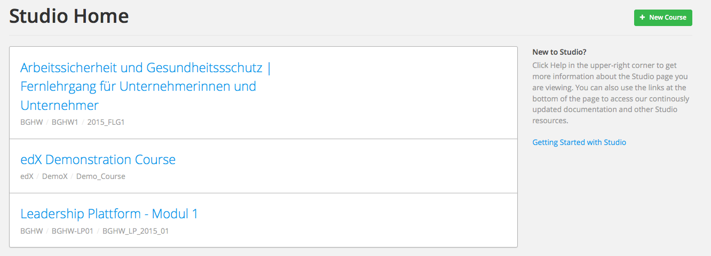

Bearbeiten sie Ihren Kurs¶
Nachdem Sie ihren Kurs erstellt haben, öffnet sich dieser automatisch und Sie können anfangen ihn zu bearbeiten. Wenn Sie später zu Studio zurückkehren, finden SIe alle Kurse die sie selbst erstellt haben oder in welchen sie Team-Privilegien unter “Meine Kurse” aufgelistet.
Um einen Kurs zu öffnen, wählen sie den Kursnamen mit Ihrer Maus aus. Nun öffnet sich die Kurs-Übersicht Seite.